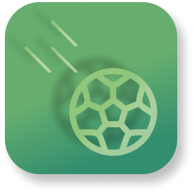
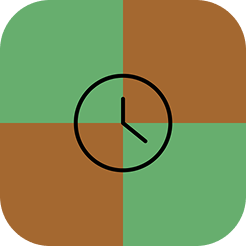

Quinto
Quinto is an iOS app built with Xcode designed to help you to easily manage your football team. Track your players, store individual stats, and organize matches effortlessly—all in one place.
FeelRec
FeelRec is an iOS app built with Xcode that allows you to record your feelings and emotions. It helps you to keep track of your mental health and well-being.
TimerChess
TimerChess is an iOS app built with Xcode that allows you to play chess with a timer. It helps you to improve your chess skills and play against your friends.